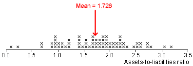

Error in an estimate
When we use a summary statistic from a random sample to estimate a population parameter, the estimate will usually not be exactly the same as the parameter.
The difference between the estimate and the target parameter is called the error in the estimate.
For example, if the sample mean,  , is used to estimate a population mean, µ, the error in this estimate is
, is used to estimate a population mean, µ, the error in this estimate is
error =  - µ
- µ
If a sample proportion, p , is used to estimate a population proportion, π, the estimate's error is
error = p - π
Assets-to-liabilities ratio
Researchers in Greece determined the assets-to-liabilities ratios of a sample of 68 healthy companies. The aim of the study was to compare these healthy companies with another 33 companies that had just failed, but we will only consider the healthy companies in this chapter of CAST.
Low assets-to-liabilities ratios are usually regarded as undesirable for a company.
What is the mean assets-to-liabilities ratio for healthy companies such as these?
In other words, we want to estimate the population mean of the assets-to-liabilities ratio in the wider population of similar Greek companies.
The stacked dot plot below shows the assets-to-liabilities ratios for the 68 companies in the study and marks their mean.

We are not interested in the specific 68 companies that were sampled, but want to understand the underlying 'population' distribution of assets-to-liabilities ratios in all such companies.
We therefore estimate that the population mean assets-to-liabilities ratios for this type of company is 1.726.
However our estimate of 1.726 is only based on a sample of 68 values so there is likely to be an error in this estimate.
How accurate is the estimate?
In the example above, we used a sample statistic to estimate of an unknown population parameter.
How big is the error likely to be?
The remainder of this chapter introduces some methods to describe the accuracy of estimates (and equivalently, the likely size of the resulting errors).